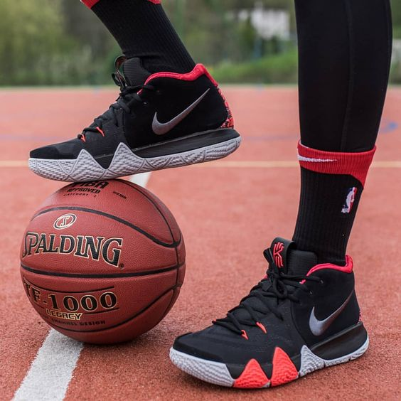
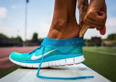

| TENNIS NIKE | |
|
Los tenis Nike son zapatos predominantemente deportivos para mujeres y hombres y se caracterizan por ser ultraligeros debido a que se usan para hacer ejercicio, practicar algún deporte o recorrer grandes distancias a pie1. Estos tenis suelen tener ajuste por agujetas o por bandas elásticas que se ajustan al pie1. Algunos de los nombres de los tenis Nike son:
  |
| NIKE 2023 © TODOS LOS DERECHOS RESERVADOS | |